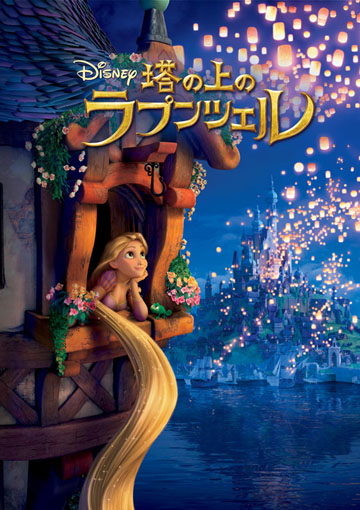

🎶 アナと雪の女王 et 塔の上のラプンツェル
J’ai regardé La reine des neiges et Raiponce en japonais !
J’ai une passion dans la vie. Enfin, si on veut… En tout cas, il y a quelque chose que j’adore faire, c’est chanter les chansons de mes Disney préférés ! Alors je vais sur Youtube et je lance les vidéos des passages chantés. L’autre jour, j’ai fini par tomber sur les chansons de La reine des neiges en japonais !
Voici les paroles de « Libérée, délivrée » que j’ai trouvées sur internet. En écoutant la musique ça a l’air d’être ça.
Furi hajimeta yuuki wa ashiato keshite
Masshiro na sekai ni hitori no watashi
Kaze ga kokoro ni sasayaku no
Konomama ja dame nanndato
Tomadoi kizutsuki
Dare nimo uchiakezuni nayanndeta
Sore mo mou yameyou
Ari no mama no sugata miseru noyo
Ari no mama no jibunn ni naru no
Nani mo kowaku nai kaze yo fuke
Sugoshi mo samuku naiwa
Nayanndeta koto ga uso mitai ne
Datte mou jiyuuyo nandemo dekiru
Dokomade yareruka jibunn wo tameshitai no
Sou yo kawaru no yo watashi
Ari no mama de sora he kaze ni notte
Ari no mama de kobigashite miru no
Nidouto namitawa nanesanai wa
Tsumetaku daichi wo tsutsumi koumi
Kakaku wa mai angaru omoi tegaite
Hanasaku koui no deshou no youni
Kagaite itai moukimetano
Korede ii no jibun wo suki ni natte
Korede ii no jibun shinjite
Hikari abinagara aruki dasou
Sugoshi mo samukunai wa
Alors je me suis dit qu’il fallait vraiment que je regarde le film en japonais (アナと雪の女王 « Ana et la Reine des neiges »). J’ai trouvé le bon doublage que j’ai réussi à insérer sur le film que je possédais déjà. Coup de chance, j’ai trouvé le doublage de Raiponce aussi (塔の上のラプンツェル « Raiponce sur sa tour ») ! Autant dire que je me suis bien amusée ^^.
C’est trop marrant d’entendre des expressions japonaises qu’on connait déjà dans d’autres contextes. J’ai adoré les transpositions des prénoms en japonais aussi : オラフ (Olaf), ラプンツェル (Raiponce), クリストフ (Kristoff), ユージーン (Eugène). Et il y a la différence de niveau de langage entre les personnages. Par exemple, dans les paroles d’Ana, on entend souvent des formules de politesse avec des ください alors que Kristoff parle de manière plus rapide, plus abrupte.
Bref, j’ai adoré, je me suis trop amusée. Je les ai regardés sans sous-titres, mais je pense qu’il faut les voir avec les sous-titres en rômaji et en kanji ! Je vais essayé de trouver les doublages japonais pour d’autres films que j’aime, comme La Belle et la bête et Harry Potter. Je recommande vivement de vivre cette expérience !